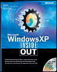
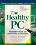
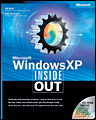
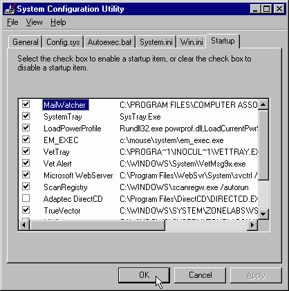
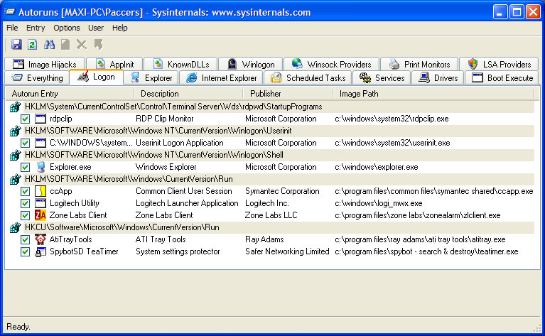
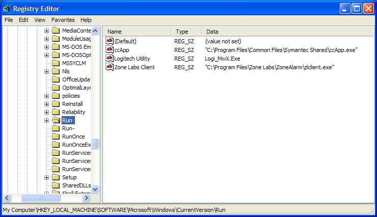
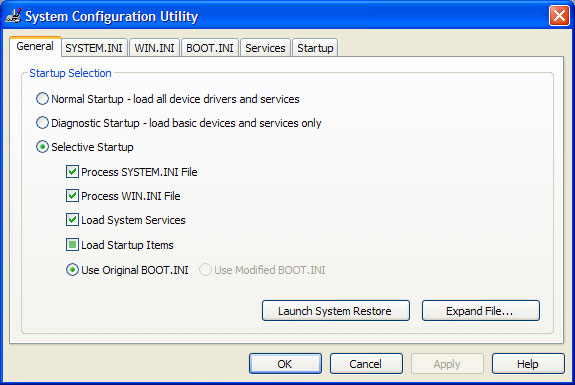
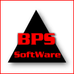

Central
RECOMMENDED BY:
|
|  |  | |||||
| Lockergnome | Langa List | Scot's Newsletter | PC Fear Factor | Backwash | Geek News Central | Mac's Picks of the Week | The Healthy PC | Microsoft® Windows® XP Inside Out |
Last update :- 3rd February, 2007
13679 items listed
(1) If you receive an E-mail with an attachment from pac.man@ntlworld.com or pacman@pacs-portal.co.uk it isn't from me. It's most likely due to somebody elses PC bring infected with a VIRUS such as variants of MYDOOM, NETSKY and BEAGLE which spoof valid E-mail addresses. (2) If you run Windows XP and have updated to SP2 and have the pop-up blocker for IE enabled by default the off-site links on this site won't work. They're
not pop-ups but that's the way it works. Choose Tools -> Pop-up Blocker -> Pop-up Blocker Settings and set the "filter level" to Medium.
If you are a regular visitor, click here to go straight to the PROGRAMS
The intention of these pages is to provide a central resource for PC users and Tech Support staff alike who are concerned about the poor performance of their PCs due to the number of programs that run at system start-up. The following information is provided:
Background to the problem
Techniques that can be used to identify and disable start-up programs from running
A comprehensive list of programs that are loaded at start-up
A request for additional programs or updated information
DISCLAIMER: It is assumed that users are familiar with the operating system they are using and comfortable with making the suggested changes. I will not be held responsible if changes you make cause a system failure.
Paul Collins
(aka Pacman)
Pacman's Portal
------------------
Virtually all applications you install using the default installation these days decide that they should start-up when Windows starts. If you allow these to take control, you can end up with a situation where (unless you have sufficient memory installed) every other program slows down to be unusable.
The reason for this is that all of these programs use a portion of the system memory and resources which leaves a smaller percentage for other programs once they're opened. On my old system for example, prior to tweaking I had 33 programs running at start-up with the system resources at 59% and Windows took an age before it was ready for use. Post tweaking I had a mere 10, with system resources back to 92% and Windows was up and running within a minute.
Win9x/Me/2K/XP users:
Use the "System Configuration Utility" (MSCONFIG) to identify startup programs. MSCONFIG is available for all Win9x/Me/2K/XP users (Win95/2K user can use the respective versions from here).
You invoke it by clicking Start then Run. In the Open box, type msconfig.exe followed by enter. Once displayed, click on the "Startup" tab. You will see a list of items and the 2 columns that we're interested in are "Name" (WinME) or "Startup Item" (WinXP) and "Command". For Win98 the columns aren't named but the one on the left is the equivalent of "Name" and the one on the right is the equivalent of "Command":
 |
Win98 |
|
WinME |
|
WinXP |
Note that with all of these you can expand the width of each column by holding down the left mouse button with the cursor on the vertical line between the column headings (where applicable) and then dragging the mouse either left or right before releasing. With the XP version (for which the window cannot be re-sized) you can also double-click on the vertical line between two column headings to maximize the column width.
WinNT users:
Use a free utility from SysInternals called
AutoRuns
which displays all the startup locations. Highlight an item and click on "Jump to" and it will take you to the appropriate startup location, including the registry keys where appropriate:

If the registry editor is opened (REGEDIT), you will see a list of items and the 2 columns I'm interested in are "Name" and "Data":

You can also use the excellent HijackThis by Merijn. Read the tutorial and I'm interested in the "O4 - Autoloading programs from Registry" section. CastleCops run a dedicated forum for HijackThis users who are interested in the other entries. In addition, you may want to try a beta program called HijackReader from Mikko Olesen.
Alternatively, you can use a startup manager.
Notes:
(1) The "Close Program" window in Win9x/Me and "Task Manager" window in WinNT/2K/XP (both can be accessed via the CTRL+ALT+DEL key combination) displays some startup programs AND other background tasks and "Services". This site is concerned with startup programs ONLY (from the common startup locations). For a list of tasks/processes you should try WinTasks 5 Standard/Professional from Uniblue Systems Ltd or the list at AnswersThatWork.
(2) I won't be including "Services" from the WinNT/2K/XP operating systems. I fully understand that some programs with these OS's use "Services" as an alternative to load their component parts at startup but I don't have the time available to include these as well. For Win2K services information see TechSpot's article here. For WinXP services see TechSpot's article here or The Elder Geek's article here.
A number of methods can be prevent programs from running at startup. What these are how you use them is described here. My recommendations are that you try each of the methods listed below in that order. Each method has an indication of which Windows operating system it is applicable to.
The best option is to check if a program gives you an option to disable the function you're interested in - via a right-click on a System Tray icon or maybe an "options" menu within the program. If this isn't available then you have to try something else.
For example, Norton SystemWorks has an "Options" tab on the main start-up screen that allows you to configure the utilities in the suite - Norton Utilities, Norton AntiVirus and Norton Cleansweep.
If you click on Start -> Programs -> StartUp (Win9x/Me/NT/2K) or Start -> All Programs -> StartUp (WinXP) you may find programs loading from here via shortcuts. If this is the case, you have two options :-
Delete the shortcut from the StartUp directory (based on your OS):
Win9x/98/Me - C:\Windows\Start Menu\Programs\StartUp
WinNT/2K - C:\Winnt\Profiles\All Users\Start Menu\Programs\StartUp
WinXP - C:\Documents and Settings\All Users\Start Menu\Programs\Startup
Create a temporary directory for your OS called "Disabled StartUp Programs" and move the shortcuts there. If a program doesn't work as expected you can always move the relevant shortcut back again
Win9x/98/Me - C:\Windows\Start Menu\Programs
WinNT/2K - C:\Winnt\Profiles\All Users\Start Menu\Programs
WinXP - C:\Documents and Settings\All Users\Start Menu\Programs
Work your way through the list of programs included here and deselect the appropriate boxes in your version then click OK followed by re-starting Windows.
WinME and WinXP display items for the same program in different ways in MSCONFIG. WinME uses the same descriptive text under the MSCONFIG "Name" and registry Run keys "Name" columns. WinXP often uses the first part of the filename under the "Startup Item" column and the equivalent descriptive part in the "Name" column of the registry "Run" keys. For instance, on my WinXP Home machine I have ZoneAlarm and see:
Virus entries in the program list are only shown using the registry version which is common to all Windows versions. Otnerwise there would be multiple entries for popular filenames that viruses often use - such as "svchost" for example.
Notes:
When you have deselected an item in MSCONFIG, you will be starting in "Selective startup" mode. This can be seen under the "General" tab. Working in "Selective startup" mode is perfectly acceptable - I do and don't have a problem. Warning: If you subsequently decide to choose "Normal startup", all disabled items will be re-enabled

Some disabled items may disappear from MSCONFIG when you re-start Windows
MSCONFIG is intended to be used to temporarily disable programs from running at system start-up. In some cases, disabled items may be added to a new category under Start -> Programs (Win9x/Me/NT/2K) or Start -> All Programs (WinXP) called "Disabled Startup Items". If the entry has disappeared from MSCONFIG and is available here they can be copied back into the appropriate OS StartUp directory:
Win9x/98/Me - C:\Windows\Start Menu\Programs\StartUp
WinNT/2K - C:\Winnt\Profiles\All Users\Start Menu\Programs\StartUp
WinXP - C:\Documents and Settings\All Users\Start Menu\Programs\Startup
There are a number of programs widely available as shareware or freeware that achieve the same purpose. Each can identify what programs are running at startup and allow you to control them to differing degrees. I cannot personally recommend an individual program as I don't use them and am happy enough with MSCONFIG (even though it is only intended to be a temporary solution while troubleshooting - see above).
Want to try a start-up manager? Try from the list given here.
Note: if you are running NT and don't have a startup manager you only have this choice remaining, which is a last resort.
You can both disable and permanently stop programs from running during start-up by editing the relevant entries from the System Registry using REGEDIT. This option isn't for the faint hearted and should only be used by those who are comfortable with editing the System Registry and understand what implications any changes may have. If you delete something from the System Registry accidentally, it may be corrupted to the extent that Windows may not re-start at all so beware.
For information about the Windows registry and editing it's contents try the Windows Guide Network registry pages.
To invoke the Registry Editor, click Start then Run. In the Open box, type regedit.exe followed by enter.
The keys you're interested in are as follows:-
HKLM\Software\Microsoft\Windows\CurrentVersion\Run
HKLM\Software\Microsoft\Windows\CurrentVersion\RunOnce
HKLM\Software\Microsoft\Windows\CurrentVersion\RunServices
HKLM\Software\Microsoft\Windows\CurrentVersion\RunServicesOnce
HKCU\Software\Microsoft\Windows\CurrentVersion\Run
HKCU\Software\Microsoft\Windows\CurrentVersion\RunOnce
For Windows 98 & Me, disabled items were placed in the registry keys named above with a "-" after it, ie:
HKLM\Software\Microsoft\Windows\CurrentVersion\Run-
For Windows XP this is changed:-
For items that were in the Start -> Programs -> Startup folder:
HKLM\SOFTWARE\Microsoft\Shared Tools\MSConfig\startupfolder
You'll find a subkey for each disabled item.
For items loaded from the Registry:
HKLM\SOFTWARE\Microsoft\Shared Tools\MSConfig\startupreg
Again, you'll find a subkey for each disabled item.
The WIN.INI file is located in C:\Windows (Win9x/Me/XP) or C:\Winnt (WinNT/2k) and can be seen if you have enabled "Show hidden files and folders" via My Computer -> Tools -> Folder Options then the "View" tab. This file is executed at Windows startup.
Some valid programs and a lot of virusses load at startup via this method under the [windows] section via "run=" or "load=" as follows:
[windows]
run=hpfsched
run=%Windows%\CapsideRed.pif
load=asistat.exe
Load = "C:\Windows\System32.exe"
In the first example, "hpfsched" is a valid entry to remind you to clean the cartridges in your HP DeskJet from time to time in
order to keep print quality high. It can be removed from the run line in win.ini file if you do not want that feature.
In the second example, "CapsideRed.pif" has been added by the CASPID virus and is obviously not desired (where %Windows% is C:\Windows or C:\Winnt).
In the third example, "asistat.exe" is a valid entry that is the status monitor for an NEC SuperScript printer. It can be removed from the load line in win.ini if you do not want that feature.
In the final example, "System32.exe" has been added by the MARI virus and is obviously not desired.
Note: From WinMe onwards MSCONFIG includes the "run=" and "load=" entries so this section is only included for completeness. Only valid "run=" entries are included in the programs list to save against repitition from the many virusses that use this method.
The SYSTEM.INI file is located in C:\Windows (Win9x/Me/XP) or C:\Winnt (WinNT/2k) and can be seen if you have enabled "Show hidden files and folders" via My Computer -> Tools -> Folder Options then the "View" tab. This file is executed at Windows startup.
The only valid entry under the "shell=" line here is:
[boot]
shell=Explorer.exe
However, some virusses use this line to execute themselves at startup. For example:
[boot]
shell=Explorer.exe %Windows%\Capside.exe
This has been added by the CASPID virus and is obviously not desired (where %Windows% is C:\Windows or C:\Winnt).
The list of applications is available in one of five formats, updated when I have the time available. If you're a regular visitor and just need to know what program entries have changed in the full list consult the Monthly Updates.
If you have some kind of internet filtering software installed some of these pages may not display due to the unfortunate use of certain names by some of the entries. This cannot be helped if the information provided is to be accurate. If that is the case I would suggest you download either the Full-list ZIP, Start_ups.exe or Excel ZIP files which will bypass the filtering.
All items - on-line database displaying all programs, recommendations and descriptions
Full-list ZIP - off-line page showing all items in one table - also includes a search facility. Includes a cascading style sheet (startups.css) that allows the page to be displayed the same off-line as the on-line version. Extract all files to the same directory
Start_ups.exe - self-executable file with in-built browser and search capabilities
Excel.ZIP - Microsoft Excel 2000 version without the hyperlinks.
Short-list - simple list without search facility for search engine cache purposes
All programs are listed alphabetically according to "Name" or "Startup Item" (from MSCONFIG, Registry, etc) rather than "Command" or "<filename>.exe".
Entries in the tables highlighted with a ? and those in red indicate that they are unfinished. This may be due to:
Missing information
Functionality unknown
Functionality known but whether it's needed at start-up is unknown
If you can help fill in the missing information then please let me know.
PLEASE READ THIS before submitting new programs to be added to the list. Submissions can be made via E-mail or the Message Board
The following information would be useful:
Program name: This is the descriptive part of the program entry, such as "NAV Agent" in this example and NOT the "<filename>.exe" or similar part as below. Some entries may be blank - if so just let me know
File name: This is the actual file loaded by at start-up by the descriptive part above, such as NAVAPW32.EXE in this example. If possible include the location of the file as well. Some entries may be blank - if so just let me know
Description: If you know what the program does then please include a simple description, referring to a host web-site if known. You can also use Start -> Search (or Find) to locate the executeable on your PC and
Note the folder it's in
See if there's a "readme" file or similar
Right-click on the executable and check the "properties" for its name and who wrote it
Is it needed: There are 4 options available
If the program must run at start up for correct operation the answer is Yes
If it's optional and could be useful the answer is User's Choice
If it's not needed at all or can be accessed via Start -> Programs or a Desktop Shortcut the answer is No
If it's known to be a wasteful "resource hog", spyware or a virus the answer is Ditch It
Is there a shortcut available: See if the program is available via Start -> Programs and/or a Desktop shortcut
-----------------------------
Please be aware that any of the links below will open a new browser window.
MIRROR SITES:
OTHER STARTUP LINKS:
The following sites proved very useful when creating this site:
Resource
Management (by DJDenham) - background information leading to another list of applications
and the inspiration for this site.
System
Configuration Utility Overview (for XP) (by Microsoft) - explains the
purpose behind MSCONFIG.
Greatis Startup Application Database (by Greatis Software) - list of startup applications organised by their executable filenames
Note: Please note that some of the product links below will take you to the appropriate product page whereas others are affiliate links. The affiliate links will normally take you a page offering you the opportunity to purchase the appropriate product. You can find out further information about the product in question on that site and if you subsequently choose to make a purchase I will earn a commission, which goes towards the maintenance of this site and the startup database. Note that I prefer to use simple text links rather than product "box" shots like other sites, as I personally don't like the latter. The affiliate links are clearly marked with a * for your convenience.
| Personally used: | ||
Advanced System Optimizer * |
- |
by Systweak - "around 30 tools to supercharge your PC's performance" |
Other startup managers that use the information from this site: |
||
Absolute Startup |
- |
by F-Group Software |
| Ace Utilities | - | by Hari Krishnan |
| jv16 PowerTools | - | by Jouni Vuorio |
| A2 HiJackFree | - | by Emsi Software GmbH |
| RegRun 3 Security Suite * | - | by Greatis Software |
| Spybot - Search & Destroy | - | by Team Spybot (select the "Advanced" mode) |
| Windows Startup Inspector | - | by William Yang |
| Cyberlion Startup Optimizer | - | by Ivan Wu |
The following startup managers also contain information that is on this site: |
||
SpeedUpMyPC 3.0 * |
- |
by Uniblue Systems Ltd (can also optimize RAM and CPU useage, recover from crashes, etc) |
| Magic Utilities 2006 | - | by Efreesky Software |
Other startup managers recommend by visitors to the site: |
||
AutoRuns |
- |
by SysInternals |
| Autostart Viewer | - | by DiamondCS |
| Codestuff Starter | ||
| InControl Startup Manager | - | by Virtuoza |
| Startup Cop Pro 2 | ||
| Startup Control Panel | - | by Mike Lin |
| Startup Genie | - | by AMIC Utilities |
A futher list of startup managers can be found here
As there are so many viruses out there in the wild, with over 4000 listed on my database alone, I very highly recommend you use some kind of ant-virus software. The lists provided below are just a small selection of the more popular AV programs available. Which ever you use, keep your virus definitions updated regularily and any subscriptions renewed where applicable.
| Personally used and recommended: | ||
ZoneAlarm Antivirus * |
- |
commercial AV product by Check Point Software |
| AVG Anti-Virus Free Edition | - | free AV product by Grisoft Inc. |
Free AVG software: |
||
avast! Home Edition |
- |
by ALWIL Software |
| BitDefender Free Edition | - | by SOFTWIN |
| ClamWin Free Antivirus | - | freeware, open-source |
Free online virus scanners: |
||
Kaspersky Anti-Virus: Free Online Virus Scanner |
- |
by Kaspersky Lab (includes a file scanner) |
| McAfee Freescan | - | by McAfee Inc |
| BitDefender Online Scanner | - | by SOFTWIN |
| Trend Micro Housecall | - | by Trend Micro Incorporated |
Commercial AV software (stand-alone packages): |
||
Norton Antivirus * |
- |
by Symantec Corporation |
| AVG Anti-Virus Professional Edition | - | by Grisoft Inc. |
| eTrust EZ Antivirus | - | by Computer Associates (CA) |
Useful virus information search links (as used for most of the virus entries in the database) are provided by Symantec, Sophos, Trend Micro and CA.
Again, there are many different types of spyware/adware/malware/hijackers out there and many free and commercial packages to deal with them. The lists provided below are just a small selection of the more popular anti-spyware software programs available.
| Personally used and recommended: | ||
ZoneAlarm Anti-Spyware * |
- |
commercial product by Check Point Software |
| Spybot Search and Destroy (Spybot S&D) | - | free product by Team Spybot |
Free Anti-Spyware: |
||
Ad-Aware SE Personal |
- |
by Lavasoft |
| Microsoft Windows Defender | - | by Microsoft |
| a-squared Free | - | by EMSI Software |
Commercial Anti-Spyware: |
||
AVG Anti-Spyware |
- |
by Grisoft Inc. |
| Trend Micro Anti-Spyware | - | by Trend Micro Incorporated |
| eTrust PestPatrol Anti-Spyware | - | by Computer Associates (CA) |
| Ad-Aware SE Professional | - | by Lavasoft |
| STOPzilla * | - | by STOPzilla |
Useful spyware links:
Counterexploitation - "Actively protect your rights. Do not let the Man keep you down. Do what is good and right, not what some authority figure tells you is good and right. Challenge the belief systems of yourself and your society. Stay informed and keep others informed. Use logic and reason for positive social change. And above all, don't take crap from anybody!" Good site for learning more about spyware, other silent install apps and "craputers". Slightly controversial in places but useful resource.
SpywareInfo - "This site is dedicated to giving you the tools and knowledge you need to protect your privacy from the onslaught of spyware, adware, and corporate and government surveillance. Particular attention is paid to detecting and defeating spyware"
Darnit - Sandra Hardmeier is one Microsoft's Most Valued Professionals (MVP) and this page on her site is dedicated to spware/adware/malware, hijackers and other annoyances
Spyware Warrior - "Here you'll find a wealth of resources to help you fight spyware and adware" - inlcuding their list of rogue/suspect anti-spyware programs
SpywareGuide - "is the leading public reference site for spyware and greynet research, details about spyware, adware and greynet applications and their behaviors, all compiled in an extensive updated database"
Spyware & Adware - "People think that there is actually no difference between spyware and adware"
With may PC users now having access to the internet via broadband "always on" connections there is now a bigger "pot" of connections available to would-be hackers. Therefore, if you have one of these connections, it's recommended you have at least a basic firewall to block their access. You can rely on the basic firewall provided with Windows XP but I would recommend using something more robust. The lists provided below are just a small selection of the more popular software firewalls available. For more information about firewalls see here.
| Personally used and recommended: | ||
ZoneAlarm Pro * |
- |
commercial product by Check Point Software |
Free Firewalls: |
||
Comodo Free Firewall |
- |
by Comodo Group |
| ZoneAlarm | - | by Check Point Software (free basic version) |
| Outpost Firewall Free | - | by Agnitum |
Commercial Firewalls: |
||
Norton Personal Firewall * |
- |
by Symantec |
| Lavasoft Personal Firewall | - | by Lavasoft |
| Outpost Firewall Pro | - | by Agnitum |
COMBINED PACKAGES:
To offer value to the customer a number of commercial companies offer combined packages including anti-virus, anti-spyware, firewall and other useful utilities. For those who want a combined package from a reputable supplier and don't want to rely on keeping separate, individual products up-to-date this may be the best option. The lists provided below are just a small selection of the more popular packages.
| ZoneAlarm Internet Security Suite * | - | by Check Point Software (includes anti-virus, anti-spyware, firewall and blocks identity theft) |
| Norton Internet Security * | - | by Symantec (includes anti-virus, anti-spyware, firewall and blocks identity theft) |
| Norton SystemWorks * | - | by Symantec (includes anti-virus, anti-spyware, system maintenance and recovery) |
| Norton SystemWorks Premier * | - | by Symantec (includes anti-virus, anti-spyware, system maintenance, recovery and backup) |
| Trend PC-Cillin Internet Security | - | by Trend Micro Incorporated (inlcudes anti-virus, anti-spyware and firewall) |
| McAfee PC Protection Plus | - | by McAfee Inc (inlcudes anti-virus, anti-spyware, firewall, system maintenance and recovery) |
| McAfee VirusScan Plus | - | by McAfee Inc (inlcudes anti-virus, anti-spyware and firewall) |
SERVICES:
TechSpot - for hardware and software tweaking, reviews and news. Includes their guides to Win2K and WinXP services
The Elder Geek - features tips and tricks on WinXP. Includes a guide to services here
TASKS/PROCESSES:
AnswersThatWork - an online helpdesk with answers to questions on hardware, software, configuration and others. Includes a companion list of background programs (or tasks) as listed by name when you press CTRL+ALT+DEL to display the "Close Program" or "Task Manager" windows
WinTasks Process Library - another list of common tasks/processes as included in WinTasks 5 Standard/Professional from Uniblue Systems Ltd which provide for "efficient resource and task management"
Faber Toys - lists all running processes and uses information from the Startup List in the "AutoRun" section. In a planned release it will link directly to information on the site
Others:
Registry Booster (by Uniblue Systems Ltd) - "Boost system performance by cleaning out all missing, unwanted, obsolete and corrupt registry entries automatically".
Media Ivestigator (by Data Recovery Systems) - "Whether you've lost pictures of special moments in your friends and family's lives captured with your digital camera or accidentally deleted files on your PDA's memory card, we understand that you want file recovery software that will recover your files as quickly, easily and cheaply as possible".
Protonic.com - "An online community that provides technical support to computer users for free. We prefer to call our users "Clients," because we have the philosophy that, despite our service being free, you should still receive the highest quality technical support"
| I am pleased to announce that Pacman's Portal Start Up Tips is recommended as a critical tool for keeping your computer in top shape in Alan Luber's new book, PC Fear Factor: The Ultimate PC Disaster Prevention Guide. This comprehensive, uncompromising guide to PC disaster prevention and recovery is written in clear, non-technical language that anyone can understand. It provides detailed, step-by-step instruction on how to prevent most computer disasters, and how to recover quickly, easily, and completely from unavoidable computer disasters. | ||
This site is used by Tech Support staff from or recommended to their clients by the following organizations (amongst others). Some of the logos are hyperlinked to the appropriate site:-
|  | |||
Please note that none of the above organizations sponsor this site. If you would like your organization shown here along with a link then please let me know. If you would like your logo removed please let me know.
Copyright © Paul Collins, 2001 -
2006
All rights reserved